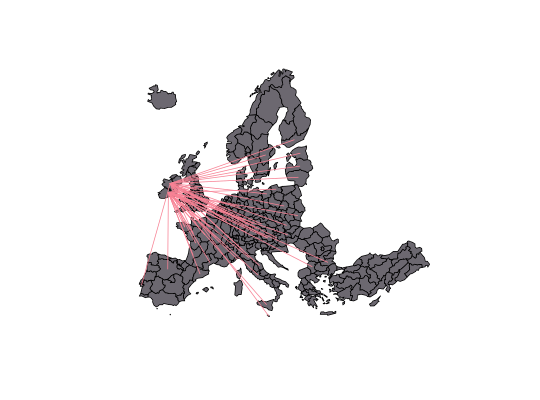

Create a SpatialLinesDataFrame from a data frame of links.
getLinkLayer(spdf, spdf2 = NULL, df, spdfid = NULL, spdf2id = NULL,
dfids = NULL, dfide = NULL)
Arguments
- spdf
- a SpatialPointsDataFrame or a SpatialPolygonsDataFrame; layer used to
get starting points of links. If spdf2 is NULL, spdf is also used to get ending points.
If spdf is a SpatialPolygonsDataFrame, links start (or end) at centroids.
- spdf2
- a SpatialPointsDataFrame or a SpatialPolygonsDataFrame; layer used to
get ending points of links.
If spdf2 is a SpatialPolygonsDataFrame, links start (or end) at centroids. (optional)
- df
- a data frame that contains identifiers of starting and ending points.
- spdfid
- identifier field in spdf, default to the first column
of the spdf data frame. (optional)
- spdf2id
- identifier field in spdf2, default to the first column
of the spdf2 data frame. (optional)
- dfids
- identifier field of starting points of links in df, default to the first column
of df. (optional)
- dfide
- identifier field of ending points of links in df, default to the second column
of df. (optional)
Value
A SpatialLinesDataFrame is returned, its data frame contains two fields (dfids and dfide).
See also
gradLinkLayer, propLinkLayer
Examples
data("nuts2006")
# Create a link layer
head(twincities.df)
#> i j fij
#> 1 DE14 AT11 1
#> 2 DE21 AT11 1
#> 3 DE23 AT11 1
#> 4 DE26 AT11 2
#> 5 DE91 AT11 1
#> 6 DEB3 AT11 1
#>
# Select links from Ireland (IE)
twincitiesIE <- twincities.df[substr(twincities.df$i,1,2)=="IE", ]
twincities.spdf <- getLinkLayer(spdf = nuts2.spdf, df = twincitiesIE[,1:2])
# Plot the links
plot(nuts2.spdf, col = "#6C6870")
plot(twincities.spdf, col = "#F78194", add = TRUE)
